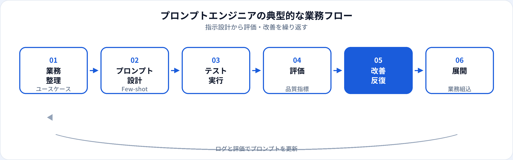

プロンプトエンジニア（Prompt Engineer）は、大規模言語モデル（LLM）に対する指示文（プロンプト）の設計・評価・改善を専門に担う職種です。2023年前後に注目が集まりましたが、2026年6月時点では単独の専任ポジションより、生成AIエンジニアや業務部門へのスキル統合が進んでいます。本記事では、仕事内容、需要の現状、年収、関連職種との違いを整理します。
資格・学習との関係
プロンプトエンジニアに必要なのは、魔法の呪文を覚えることではなく、LLMの特性・限界・評価の考え方の理解です。生成AIパスポートではプロンプトの設計原則やハルシネーション、情報セキュリティが問われ、実務では「なぜその指示で品質が上がったか」を説明できるかが見られます。
よくある誤解は、「プロンプトエンジニア＝ChatGPTを上手に使える人」だけで足りるという考え方です。業務組み込みでは、再現性・バージョン管理・評価データセット・ガードレールまで含めた設計プロセスが求められることが多いです。
基礎概念を演習で確認する
生成AIパスポート：一問一答 TF-0476（プロンプト）、TF-0437（プロンプト）、TF-0460（LLMの不得意領域）
関連記事：生成AIエンジニアとは · 試験トップ：生成AIパスポート対策
プロンプトエンジニアとは
プロンプトエンジニアは、Prompt Engineerとして、LLMが望ましい出力を返すようシステムプロンプト・Few-shot例・出力フォーマットを設計し、品質を測定しながら改善する専門職です。カスタマーサポートの応答案、社内文書の要約ルール、マーケティング文案のテンプレートなど、業務シーンごとに最適化します。
エンジニアリング職として実装まで担う場合もあれば、非エンジニアの業務専門家がプロンプト設計をリードし、エンジニアがAPI連携する分担もあります。組織によって「プロンプトエンジニア」の定義は大きく異なるため、求人票の業務記述を必ず確認してください。
仕事内容
組織によって分担は異なりますが、プロンプトエンジニアに期待されやすい業務は次のとおりです。

ユースケース整理
自動化対象の業務フロー、成功基準、禁止事項（PII・誤情報）を定義する。
プロンプト設計
役割・制約・出力形式を明示。Few-shot例やチェーン・オブ・ソートの設計も。
テスト・実験
代表クエリで出力を確認。温度やモデルバージョンの違いを比較する。
評価設計
正答率、ルーブリック、ヒューマン評価。ゴールデンデータセットの整備。
改善サイクル
失敗例を分析しプロンプトを更新。変更履歴と効果を記録する。
業務展開・教育
現場担当者へのガイドライン作成、社内ベストプラクティスの共有。
必要スキル
| 領域 | 具体例 | 重要度の目安 |
|---|---|---|
| プロンプト設計 | 役割設定、制約、Few-shot、JSON出力指定 | 必須 |
| LLMの基礎理解 | ハルシネーション、コンテキスト長、モデル差 | 必須 |
| 評価・改善 | テストケース設計、A/B比較、失敗分析 | 必須 |
| ドメイン知識 | 法務、医療、CS、マーケなど対象業務の理解 | 実務で差がつく |
| Python / API（任意） | 評価スクリプト、バッチ実行、LangChain等 | エンジニア寄りJDで重視 |
需要の現状
2023〜2024年は「プロンプトエンジニア」単独の求人が注目を集めましたが、2026年6月時点では次の傾向が見られます。
- 専任ポジションは減少傾向
-
各職種への横展開
マーケ・CS・人事・法務など、LLMを使うあらゆる職種でプロンプト設計力が求められる。
-
「設計＋評価」へのシフト
単発の上手な指示より、再現可能な評価と改善プロセスを回せる人材が評価されやすい。
キャリア戦略としては、プロンプト専任だけを狙うより、生成AI実装やドメイン専門性と組み合わせるほうが選択肢は広がりやすいです。
年収相場
当サイトの職種マスタでは、プロンプトエンジニアの年収目安を450万〜900万円としています（2026年6月時点の一般的な相場感）。専任の正社員ポジションは限られ、業務委託・副業・他職種への兼務として扱われることも多いです。
| 区分 | 年収の目安（日本・一般論） | 補足 |
|---|---|---|
| ジュニア・兼務 | 450万〜600万円前後 | 他業務と併せてプロンプト改善を担当 |
| ミドル・専任 | 600万〜750万円前後 | 複数ユースケースの設計・評価をリード |
| シニア | 750万〜900万円以上 | 社内ガイドライン・評価基盤の整備 |
キャリアパス
-
生成AIエンジニアへ
RAG・API・デプロイのスキルを足し、プロンプト設計から実装まで一気通貫で担う。
-
AIプロダクトマネージャー寄り
ユースケース選定・要件定義・品質基準の設計。技術とビジネスの橋渡し。
-
ドメインスペシャリスト
法務・医療・金融など規制の強い領域で、安全なプロンプト設計の第一人者へ。
-
コンサル・社内推進
複数部門の生成AI活用を支援。教育・ガイドライン整備が中心。
関連職種との違い
| 職種 | 主な焦点 | プロンプトエンジニアとの違い |
|---|---|---|
| 生成AIエンジニア | LLM・RAG・エージェント実装 | プロンプトに加えAPI連携・評価基盤・本番運用まで担うことが多い。 |
| AIエンジニア | AI機能の実装全般 | より広いML/AI実装。プロンプトはその一部。 |
| データアナリスト | SQL・BI・可視化 | 数値分析が中心。LLMは補助ツールとして使う場面が増加。 |
| 業務専門職＋AI活用 | 本業＋生成AI | 肩書きは別でも、プロンプト設計は日常業務に含まれる。 |
未経験からの道のり
-
LLMの基礎（2〜4週間）
生成AIパスポートレベルでプロンプト・リスク・倫理を整理。実際にChatGPT等で実験。
-
評価付きプロンプト集（1〜2か月）
10〜30件のテストケースと改善前後の比較をREADMEにまとめる。
-
ドメイン題材（1か月）
自分の本業や興味領域（CS、マーケなど）でユースケースを一つ完成させる。
-
実装の入口（任意）
PythonでAPI呼び出しとバッチ評価。生成AIエンジニアへのステップにもなる。
メリット・デメリット
| メリット | デメリット |
|---|---|
| プログラミングなしでも始めやすい入口がある | 専任求人が少なく、キャリアパスが不明瞭なことも |
| 本業のドメイン知識を活かしやすい | 「プロンプトだけ」では差別化が難しくなってきた |
| 生成AIエンジニアへのステップとして学びやすい | 成果が主観評価になりやすく、評価設計が重要 |
| 社内外の生成AI推進で即戦力になりやすい | モデル更新でベストプラクティスが変わり続ける |
よくある質問
プロンプトエンジニアと生成AIエンジニアの違いは？
プロンプトエンジニアは指示設計・評価・改善に特化し、生成AIエンジニアはRAG・API・本番運用など実装全般を担うことが多いです。詳しくは生成AIエンジニアの解説を参照してください。
プロンプトエンジニアにプログラミングは必要？
必須ではありません。評価の自動化やAPI連携でPythonがあると有利ですが、ドメイン知識と設計力が重視される求人も多いです。
プロンプトエンジニアの年収相場は？
おおむね450万〜900万円前後が目安となることが多いです（2026年6月時点）。兼務・委託の場合は別形態になります。
プロンプトエンジニアの需要は続く？
単独肩書きの求人は落ち着きつつありますが、LLMを業務で使う全職種でプロンプト設計の知識は引き続き価値があります。
生成AIパスポートは役に立つ？
プロンプト・リスク・ガバナンスの基礎を体系的に学べる教材として有用です。採用の必須条件になることは少ないですが、アピール材料になります。